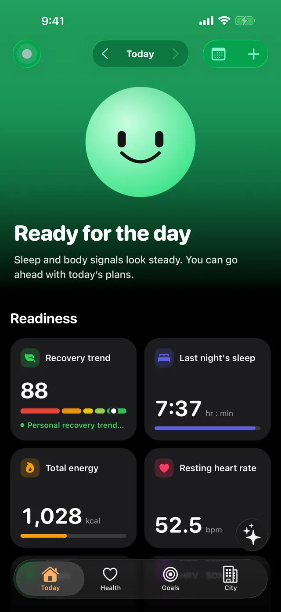
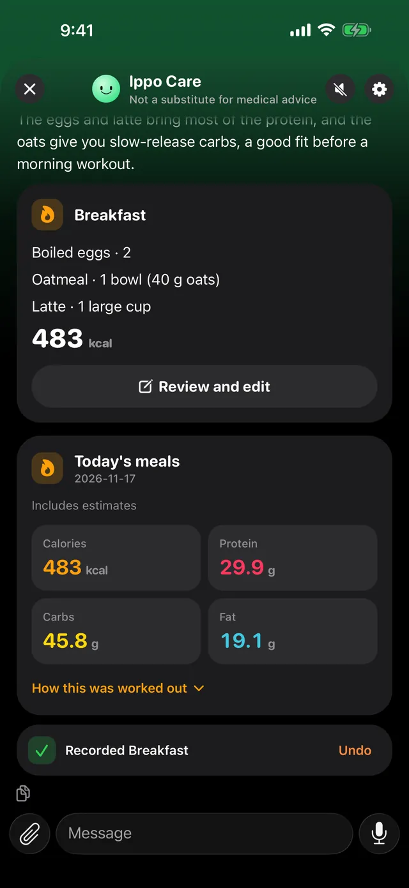
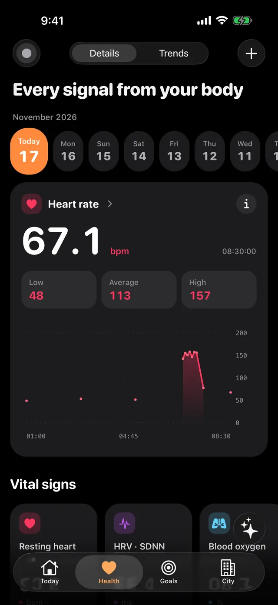

Personal health companion for iPhone
Personal health companion for iPhone
Every small step, a visible change.
Ippo Care brings your Apple Health data, meals and workouts together, helps you set goals you can keep, and grows a small city with your real progress.
- Stays on your iPhone
- No account
- No ads or tracking


From the developer
Why I built Ippo Care
For years I was seriously overweight, and my health paid the price. I was too embarrassed to walk into a gym, and I had no idea where to begin.
What changed things was AI. It never judged me. It helped me understand my body, make a plan I could actually keep, and take one small step at a time. Step by step I lost the weight, and today I feel healthier than I have in years.
I built Ippo Care so that anyone starting where I started can have that same quiet support. I hope AI can help us love ourselves a little more, and that something virtual can make the real us better, one day at a time.
Your data, handled with care
- Stays on your iPhoneNo account and no developer-run health database. Your records live on your device.
- No ads, no trackingNo advertising, no analytics SDKs, and Apple Health data is never sold.
- You choose the AIThe assistant is optional and only uses the provider and key you set up.

Policies and support
Contact the developer · wm88889@hotmail.com